Art
Romanian artists, European masters, architecture and art history illustrated by postage stamps.
 Royal Palace
Royal Palace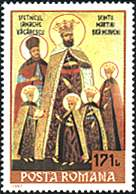
Byzantium Medieval Art
Medieval Art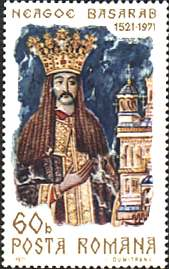
Roxanda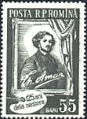
Theodor Aman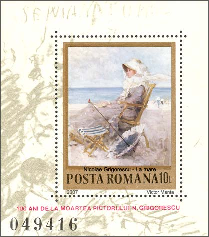
N. Grigorescu Rembrandt
Rembrandt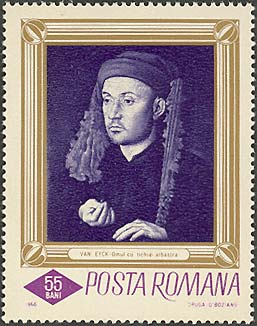
Van Eyck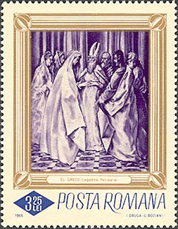
El Greco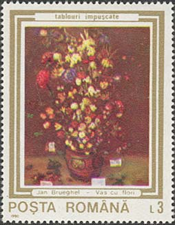
Velvet Brueghel Von Aachen
Von Aachen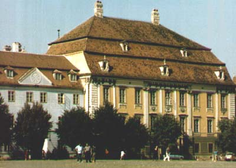
About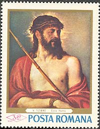
30 Years LaterTitian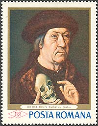
Man with a Scull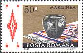
Handicrafts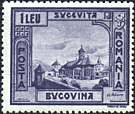
Monasteries VoronetMoldovitaSucevita
VoronetMoldovitaSucevita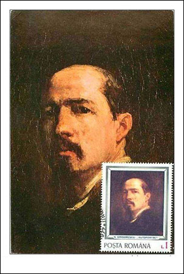
Grigorescu Nudes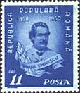
Mihai Eminescu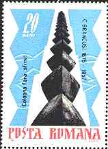
Intro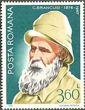
Biography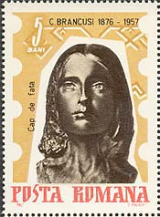
Early Work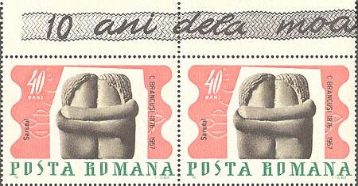
First Masterpieces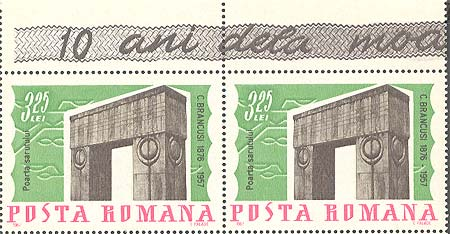
Architecture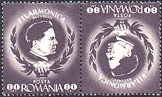
George Enescu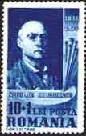
Nicolae Grigorescu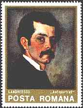
Ion Andreescu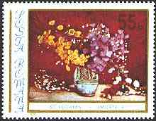
Stefan Luchian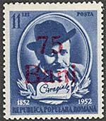
Ion Luca Caragiale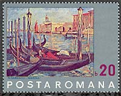
Venice in Arts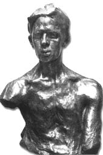
Nicolae Darascu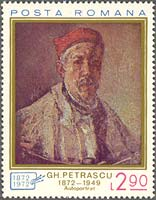
Gheorghe Petrascu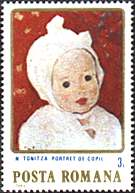
Venice in Arts Their Paintings
Their Paintings Shot Art
Shot Art December
December Balkan Women
Balkan Women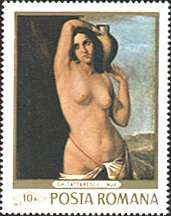
Nudes in ArtsComplete article directory
Art
Nat. Museum Bucharest
Brukenthal Museum
Religious Frescoes
Great Artists
Children
Articles retain their original text and illustrations in the refreshed layout.